Roy Blair
I work with Roy Blair, a talented singer/song writer, to develop his website. For this iteration I designed, developed, and launched an online store to sell a shirt promoting Roy's new album. The website was only live for 3 hours before the shirt sold out, and received 835 unique visitors. The site was created as a static HTML page integrated with Shopify's JavaScript Buy SDK to handle the backend payment processing. Screen captures of my work can be found below.
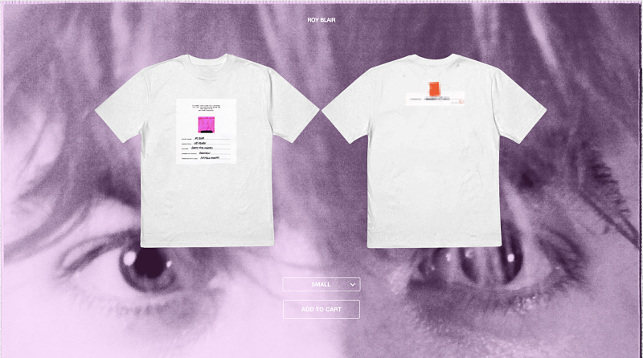 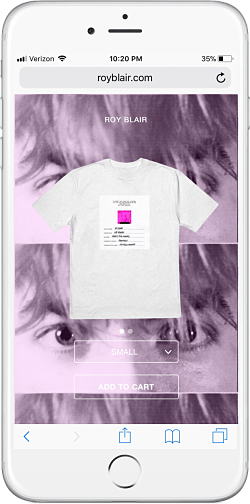 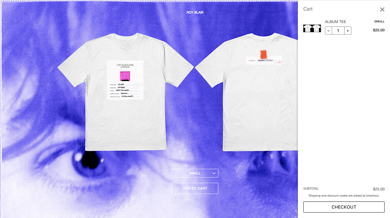 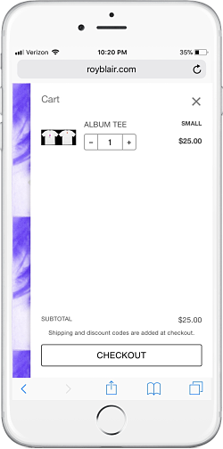For these iterations I developed static HTML pages to promote Roy's latest singles, Perfume and Jane, off of his upcoming debut album Cat Heaven.
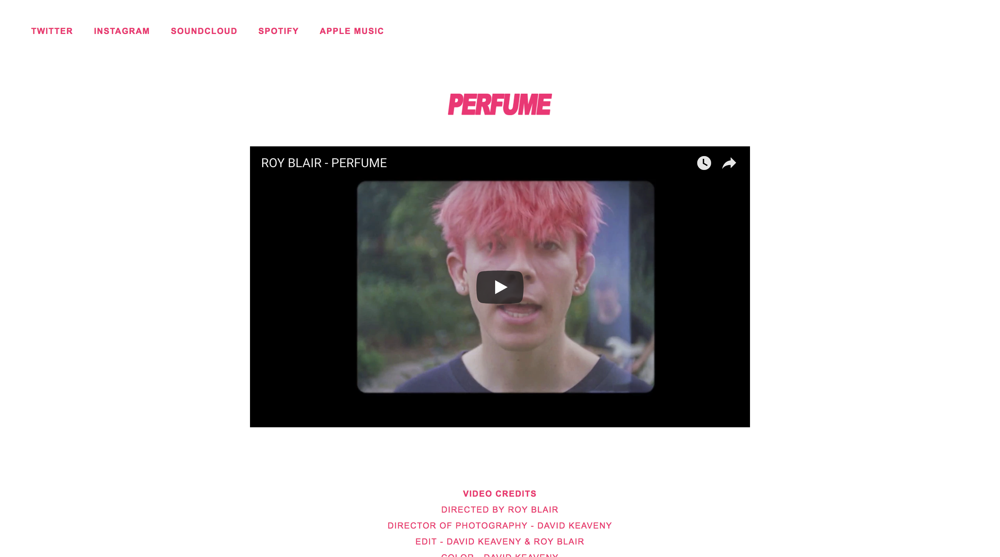 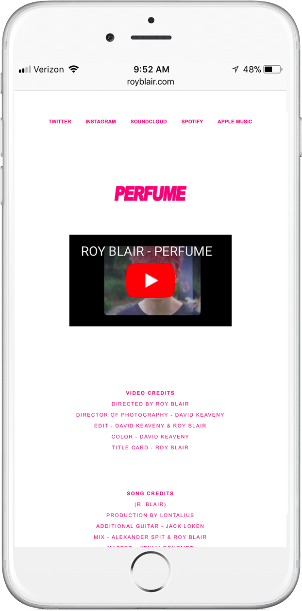 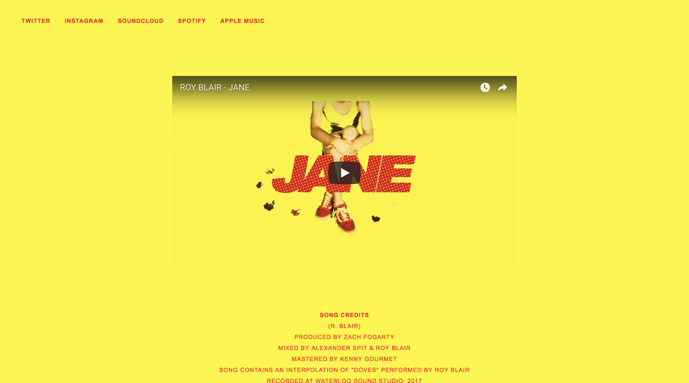 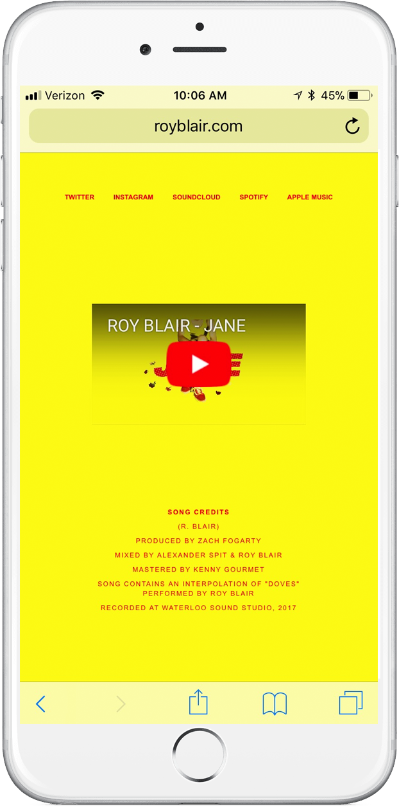Album pre-order
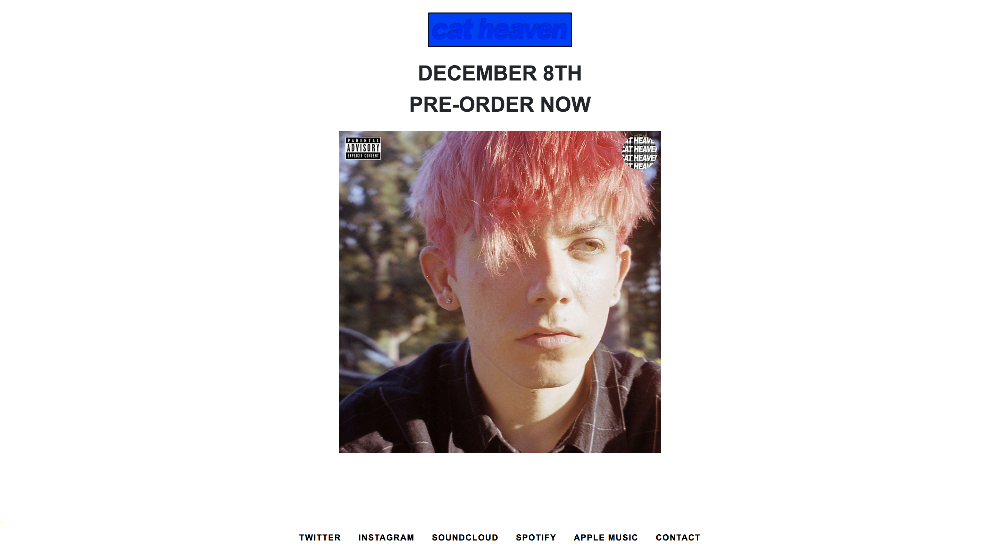Album release - auto scrolling album credits over video
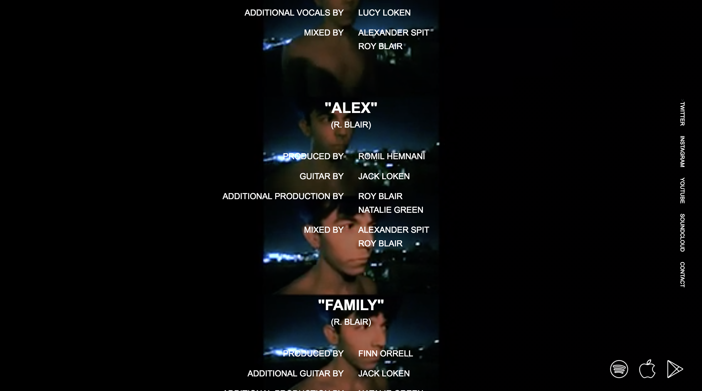 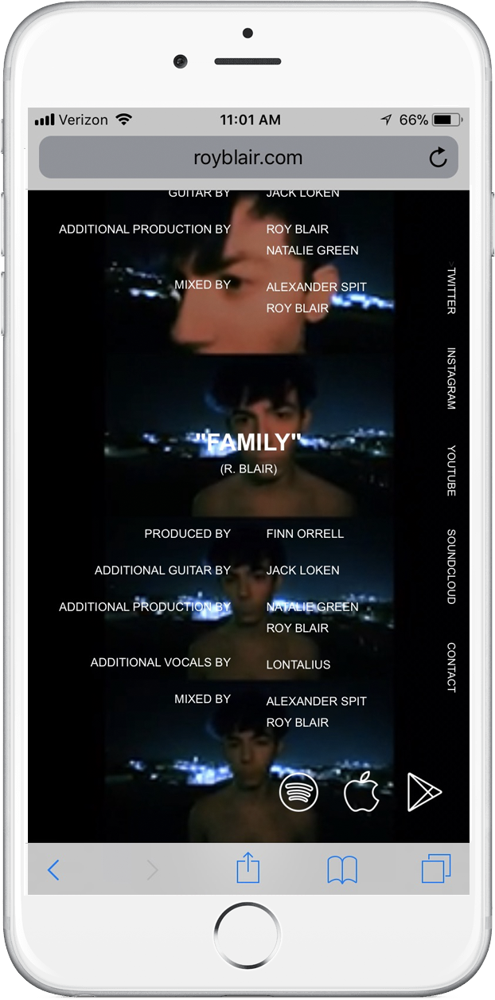EcNow Tech is a compostable plastics manufacturer based out of Corvallis, Oregon. I designed and developed this site for the company as a Ruby on Rails application. A notable feature of the site is the homepage animation. I created this using the JavaScript library three.js. I drew inspiration for the design from the graphic design company Active Theory. Screen captures of my work can be found below.
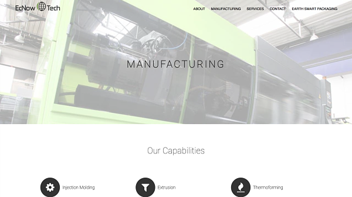 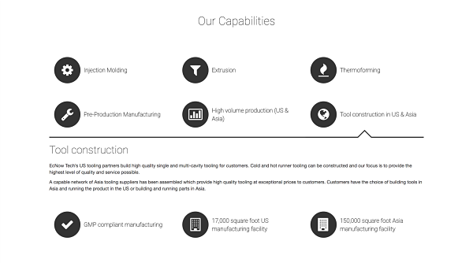 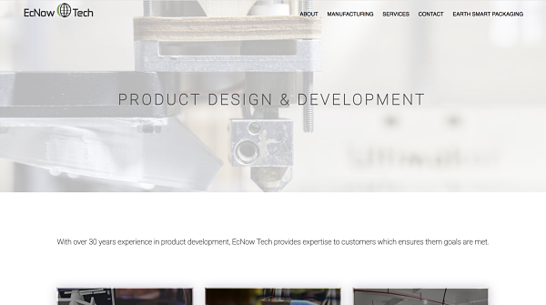 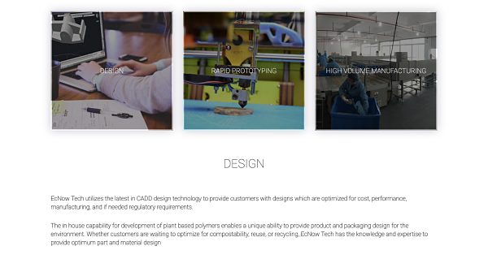 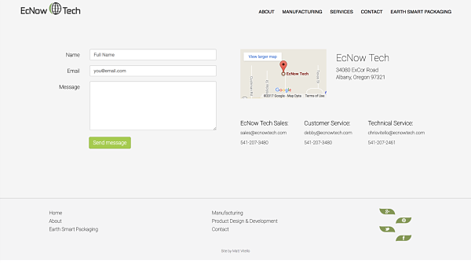 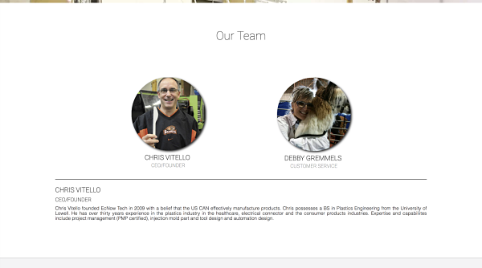In Prints
The general idea behind this project was an online store that automatically generates trending phrases onto an assortment of merchandise such as shirts, hats, bags, etc. as soon as a topic picks up traction on the internet. A friend and I accomplished this through creating a Ruby on Rails application integrated with Twitter's API. Currently trending phrases are pulled in and added to a postgreSQL database which communicates with the frontend to display the necessary content. The content is categorized three different ways - new trends, top trends (based on volume of tweets), and hot trends (based on popularity within the site itself).
As automation was one of the major value propositions for the site, the ruby gem RMagick was used to help accomplish this goal. This gem allowed for images of products to be generated with its desired designs which allowed for the site to generate new product images as new topics became trending.
This project got to the point where everything had been setup from the site design to the automated sending of orders to a manufacturer. With only a few minor fixup's, and PayPal integration left, I began looking into google adwords which ultimately led to the downfall of this business. It became too costly and unrealistic to advertise every product as it was created within the store.
Thus, the project was never finished. The code for the project can be found on my GitHub, and screen captures of my very pretty designs can be seen below.
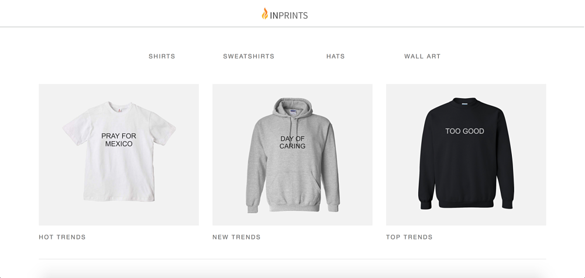 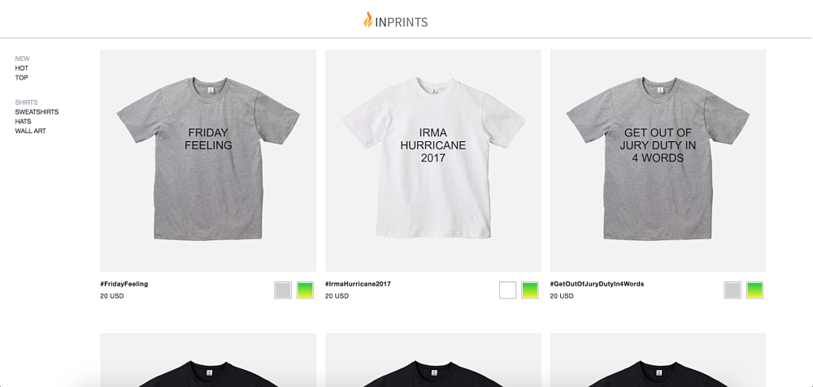 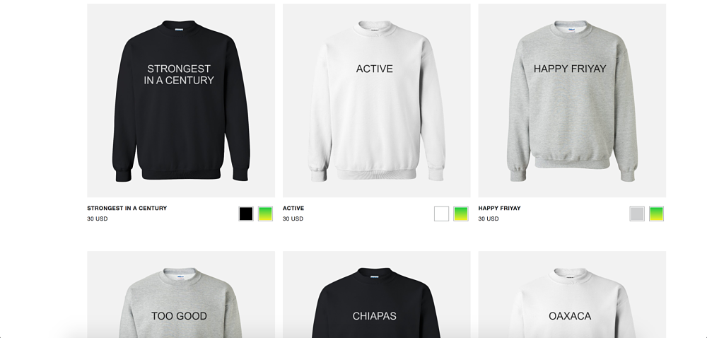 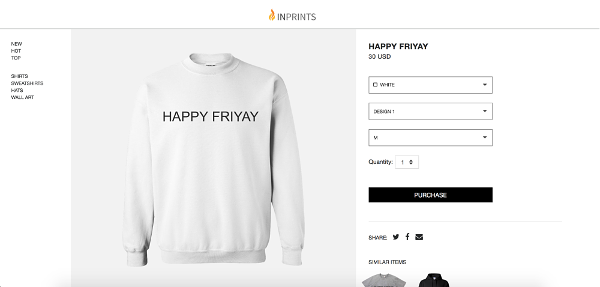Membrane & Resin Desalination System
Over the course of a year, I built a membrane and resin desalination system with a team of two other students. Funding was provided by Marquette University's Strategic Innovation Fund where we were 1 of 38 teams funded out of 275 student and faculty applicants.
The concept for this system arose from a need to make desalination processes more efficient and economical around the globe. Current methods such as reverse osmosis, and thermal distillation, are cost prohibitive due to the high amount of electricity used. The Membrane and Resin Desalination System uses a novel patented approach to transport ions through semi-permeable membranes under the influence of an applied electric potential, thus reducing the power consumption of desalination.
My primary role in the development of this device involved building and testing the system peice by peice. Today, the system is still being developed and improved upon by the project lead Emannuel Kayiwa.
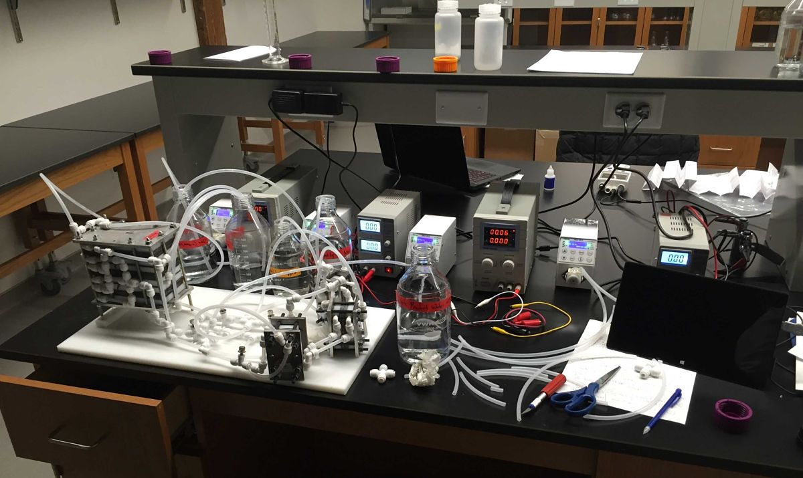 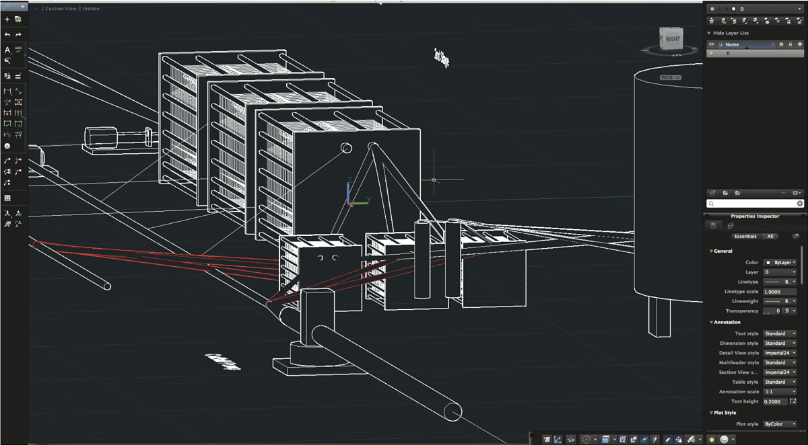